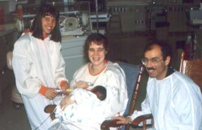

ChildLink
A Loving Connection between Children with Disabilities and the Resources They Need

Temporary Financial Assistance Available
To be eligible for this program, you must meet the following criteria:
- Have a child with a physical or mental disability diagnosed within the last 6 months (the diagnosis can be prenatal or at any age)
- Be at or below the poverty line
To apply, please do the following:
- Pick up an application from ChildLink (address below)
- Assemble the following papers:
- Your completed application
- Doctor's record of your child's diagnosis
- Tax records or Social Services certificate of your income level
- Your lease, mortgage, or medical bills, depending on which you need help with
- Make an appointment with a ChildLink volunteer, available these times:
- Ida: MW 10:30 a.m. to 3:30 p.m.
- Juan: TR 9:00 a.m. to noon
- Chris: F 10:30 a.m. to 3:30 p.m.